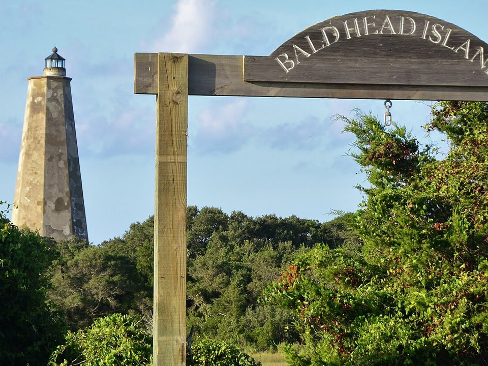

Bald Head Island · Inn
The Inn at Bald Head Island
A small inn on the island, near the marina.
Official details for The Inn at Bald Head IslandA river town and a car-free island.
Southport is a quiet waterfront town at the mouth of the Cape Fear River, with live oaks, shrimp boats and porches facing the water. A 20-minute passenger ferry runs across to Bald Head Island, where there are no cars, just golf carts, beaches, maritime forest and Old Baldy, North Carolina’s oldest standing lighthouse. Land at Cape Fear Regional Jetport, stay in Southport or on the island, eat steamed shrimp on the dock, and drive up to Wilmington for the Battleship North Carolina.

Time illustration: direct distance at 150 KTAS plus 15 minutes for departure and arrival, matching the discovery page. Use ForeFlight for your actual flight plan.
Check the weekend weather at both ends → Flight category, your minimums and the crosswind on the best runway.
KSUT, Cape Fear Regional Jetport, is a non-towered county airport at 26 feet with a 5,505-foot runway, about 10 minutes from Southport and the Bald Head Island ferry.
Cape Fear Regional Jetport, Oak Island, NC
A short hop from Myrtle Beach. Watch for military traffic near the coast and the Sunny Point restricted area along the river. No live fuel price is shown.
Carolina coast flying: summer afternoon thunderstorms, sea fog and low morning stratus, gusty sea breezes, and hurricanes from June to November. About 40 nm from Myrtle Beach.
Rates and availability need travel dates. Summer weekends book early.
A small inn on the island, near the marina.
Official details for The Inn at Bald Head IslandAn inn overlooking the marina and marsh.
Official details for The Marsh Harbour InnA restored historic home in Southport, named for the writer.
Official details for Robert Ruark InnRentals and inns in the Brunswick Islands.
Brunswick Islands for More places to stayPrices and availability for your dates, through our partner Stay22. This is an affiliate link: we may earn a commission at no cost to you. The picks above are never paid.
Reserve weekend dinners.
Steamed shrimp and oysters on the yacht basin.
Official details for Provision CompanySeafood with river views on Bay Street.
Brunswick Islands for Oliver’s on the Cape FearA longtime local favorite for oysters, crab and a good wine list.
Official details for Mr. P’s BistroA relaxed spot on the yacht basin, with water views and live music.
Official details for Fishy Fishy CafeRestaurants in Southport.
Town of Southport for More restaurantsFerry reservations are recommended in summer.
A World War II battleship in Wilmington, about 45 minutes away.
Battleship North CarolinaThis prototype links to the local visitor site. It does not yet match events to your travel dates.
Southport’s big Independence Day celebration.
Town of Southport for N.C. 4th of July FestivalWarm water and ferry days.
Bald Head Island for Beach seasonMild winters and quiet off-season weekends.
Brunswick Islands for Waterfront townCheck the local calendar when choosing a weekend, and confirm dates and tickets with the organizer.
A sample Southport weekend. No bookings or availability confirmed.
Land at KSUT mid-morning.
Steamed shrimp at Provision Company.
A short walk, then back to the airport.
Land at KSUT, subject to weather and your actual flight plan.
Walk the Southport waterfront.
Dinner at Oliver’s on the Cape Fear.
Ferry to Bald Head Island.
Golf cart to the beach and Old Baldy.
Dinner on the island.
Battleship North Carolina on the way home.
Allow time at the FBO before departure.
Afternoon thunderstorms are common in summer; leave in the morning.
Ferry to Bald Head Island.
Explore.
Dinner in town.
This guide is part of a multi-stop flying trip. Set your dates and aircraft, then swap stops to make it your own.
These details make the difference between an appealing list and a usable getaway.
Lodging, then ferry and golf cart.
About 45 nm from Myrtle Beach: an easy day trip.
Bald Head Island is car-free.
April to October.
Picks and links reviewed by WingAway Weekends. Hours, prices, menus and availability change often, so confirm directly with each place before booking. Spotted something out of date, or have a favorite we missed? Email us at hello@wingawayweekends.com.
WingAway Weekends helps you discover the destination. Use ForeFlight and current official aviation information for route, performance, weather, NOTAMs and preflight decisions. Flight planning and PIC responsibility stay with the pilot.
One fly-in weekend, a Fly to Lunch pick and the newest guides, about once a month.
Free. Unsubscribe anytime.